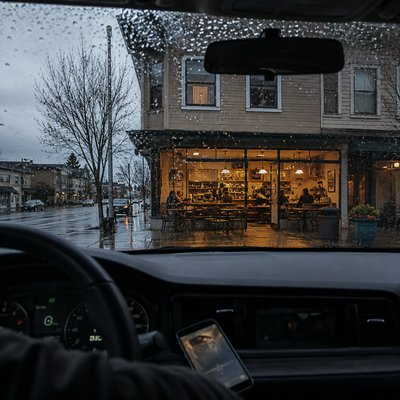

Sometimes technology remembers what we don't. A phone reconnects to a familiar network without being asked, and suddenly a forgotten corner of the past comes back into view: a street in the rain, a room above a café, and the small routine of going downstairs to get online when the connection at home wouldn't cooperate.
“Auto-Connect” finds something quietly remarkable in that ordinary moment. The details of the past have blurred, and the password is long forgotten, but somewhere in the background, a little piece of history has remained intact. The network still has the same name. The signal is still strong. And for a moment, the distance between then and now seems to disappear.
We don't always remember the things that connect our lives. Sometimes, they remember us.
Pulled over by the corner of 4th and Main Just answering a call as the rain came down Put it on speaker, let the engine run Checked my phone when the talking was done Somehow I was connected to a network nearby I hadn't tried to join it, I don't know why Then I saw the name, and it took me back To a little café I used to have I used to live upstairs, right over that place When the home connection failed, I'd go downstairs Ask the girl at the counter if I could get online I can't remember the password, but I remember the sign I don't remember when Or how long ago But the signal is strong And the network still knows Maybe I used it upstairs, maybe more than I knew Maybe there were nights when the connection came through The café is still here, with the same old name And somehow the network stayed the same I don't remember when I don't remember much Just the rain, the street, the room upstairs And the way it used to connect I don't remember when Or how long ago But the signal is strong And the network still knows Sitting in the idling car Full bars I don't know the password Five full bars Auto-connect Still connected